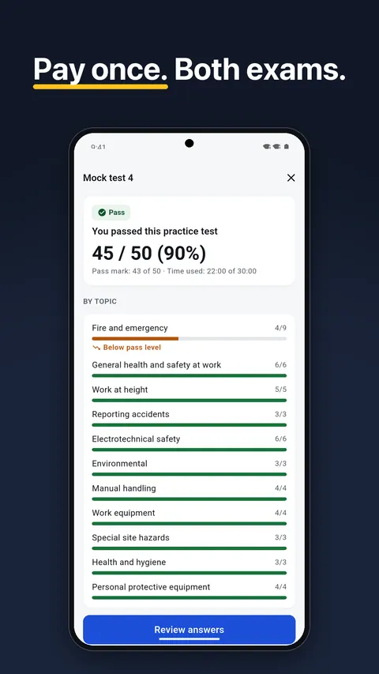

Not a government app. Sparkwise is an independent study app made by Kodfu Bilisim. It is not affiliated with or endorsed by the IET, BSI, City & Guilds, ECS or JIB. It does not contain the real exam questions and never reproduces BS 7671 text.
Electrotechnical safety: free ECS HS&E practice questions
Electricity at Work Regulations, safe isolation, test equipment, lock-off, live working, RCDs and solar PV.
10 original questions from the Sparkwise app, each with the answer and an explanation. Closed book, like the real assessment: answer first, then open the explanation. No sign-up, nothing saved. These are not the real exam questions: no app or website can show you those.
Question 1 · Choose one answer
Which regulations deal specifically with electrical safety in all workplaces?
- Provision and Use of Work Equipment Regs 1998
- Building Regulations 2010, Part P
- Electricity at Work Regulations 1989
- Electrical Equipment (Safety) Regs 2016
Show the answer
Answer C: Electricity at Work Regulations 1989
The Electricity at Work Regulations 1989 cover the design, maintenance and use of electrical systems and work on or near them.
Source: Electricity at Work Regulations 1989
Question 2 · Choose one answer
Under the Electricity at Work Regulations, when may work be done on or near live conductors?
- Whenever the voltage is below 400 V to earth
- Whenever the client says the power must not be switched off today
- Only if it cannot reasonably be dead and precautions are in place
- Whenever an experienced colleague is nearby to help
Show the answer
Answer C: Only if it cannot reasonably be dead and precautions are in place
Regulation 14 allows live work only when it is unreasonable for the equipment to be dead, reasonable to work live and suitable precautions are taken. Inconvenience is not enough.
Source: EAWR 1989 reg 14 · HSE: HSG85
Question 3 · Choose one answer
Why do you prove your voltage indicator again after testing a circuit dead?
- To check it did not fail during the test
- To calibrate it for the next job
- Because the result must be recorded twice
- To recharge its battery before the next job
Show the answer
Answer A: To check it did not fail during the test
If the tester failed mid-test it would show 'dead' on a live circuit. Re-proving it confirms the result was genuine.
Source: EAWR 1989 regs 12-13 · HSE: HSG85
Question 4 · Select TWO answers
Which of these are part of securing an isolation? Select TWO.
- Telling the client not to touch the board
- Fitting your own lock and keeping the key
- Covering the switch with insulating tape
- Fixing a warning notice at the isolator
Show the answer
Answer B: Fitting your own lock and keeping the key, D: Fixing a warning notice at the isolator
A personal lock stops anyone else re-energising the circuit, and the notice tells people why. Verbal warnings and tape are not secure.
Source: EAWR 1989 reg 13 · HSE: HSG85
Question 5 · Choose one answer
Why should you not use a non-contact voltage detector to prove a circuit dead?
- It must be calibrated in a lab before each use
- It can miss voltage, so it cannot prove dead
- It only works on DC solar supplies
- It is too sensitive for use on site
Show the answer
Answer B: It can miss voltage, so it cannot prove dead
Non-contact detectors can miss voltage on screened or armoured cables or with a weak battery. They are useful for a quick check, not for proving dead.
Source: HSE: GS38 electrical test equipment
Question 6 · Choose one answer
What are finger barriers on test probes for?
- Clipping the probe to a terminal
- Stopping fingers slipping onto bare metal
- Improving the accuracy of the voltage reading
- Storing the probes when not in use
Show the answer
Answer B: Stopping fingers slipping onto bare metal
Finger barriers give a physical stop, so your hand stays on the insulated part of the probe.
Source: HSE: GS38 electrical test equipment
Question 7 · Choose one answer
What is the main danger of an arc flash on a live distribution board?
- Temporary loss of hearing only
- Radiation sickness some days afterwards
- A mild tingling in the fingers
- Severe burns from heat and molten metal
Show the answer
Answer D: Severe burns from heat and molten metal
An arc flash releases a burst of heat, light and molten metal in milliseconds. It can cause serious burns and eye injuries even without contact.
Source: HSE: Electricity at work (HSG85)
Question 8 · Choose one answer
What voltage is recommended for mains-powered portable tools on construction sites?
- 230 V single-phase mains
- 400 V three-phase supply
- 110 V centre-tapped to earth
- 50 V d.c. from a battery pack
Show the answer
Answer C: 110 V centre-tapped to earth
A 110 V supply with the centre tap earthed limits shock voltage to 55 V to earth. Battery tools are better still where available.
Source: BS 7375 · BS 7671 Reg 411.8, Section 704
Question 9 · True or false?
An RCD will protect a person who touches the line and neutral conductors at the same time while standing on an insulated surface.
- True
- False
Show the answer
Answer B: False
Current flowing from line to neutral through the person is balanced, so the RCD sees no leakage and will not trip.
Source: BS 7375 · BS 7671 Reg 415.1
Question 10 · Choose one answer
You isolate a lighting circuit but find its neutral is shared with another circuit that is still on. What is the danger?
- There is no danger once the line is isolated
- It can carry current and shock you when opened
- The lights on the other circuit will flicker
- The RCD will stop all current flowing
Show the answer
Answer B: It can carry current and shock you when opened
A borrowed or shared neutral can carry load current and float at a dangerous voltage when opened. Isolate every circuit sharing it.
Source: BS 7671 Reg 314.4
You’ve seen 10 of 43 questions in this topic
The Sparkwise app has all 43, each with an explanation. Across the whole ECS HS&E there are 389 questions in 11 topics, plus timed 50-question mock exams of 30 minutes.
All 43 are free in the app. Sparkwise Pro is £12.99 one-off and unlocks every question, every mock exam and every worked solution for both exams. No subscription.
Android now; iPhone version not yet available.
Revision notes
The Electricity at Work Regulations 1989
These regulations apply to every electrical system used at work, whatever its voltage. Duties fall on employers, the self-employed and employees for matters within their control. Systems must be built and maintained to prevent danger, there must be a suitable means of cutting off the supply and isolating equipment, and adequate precautions must stop equipment that has been made dead from becoming live again. Low voltage means above 50 V and up to 1000 V a.c.; extra-low voltage is 50 V a.c. or less. Anyone doing electrical work must be competent for that work or properly supervised. Some duties are absolute, which means they must be met whatever the cost or difficulty.
Safe isolation, step by step
Treat every circuit as live until you have proved it dead. Identify the circuit and the correct point of isolation; never trust a board chart alone. Get permission where needed, then switch off and isolate. Secure the isolation with your own lock, keep the key on you and fit a warning notice. Prove your voltage indicator on a proving unit or known live source, test between every combination of conductors at the point of work, then prove the indicator again. Only then start work.
Voltage indicators and test leads
Use a two-pole voltage indicator or test lamp made for proving dead, not a multimeter that could be set on the wrong range or a non-contact detector that can miss a live conductor. HSE guidance GS38 describes safe probes and leads: finger barriers, well-insulated leads, colour coding, fuses or current limiting, and probe tips with no more than 4 mm of exposed metal, ideally 2 mm or less, or spring-loaded retractable shrouds. Check the instrument and leads for damage before every use and do not use them if in doubt.
Locking off and warning notices
Switching off is not enough: someone else could switch the circuit back on. Lock the isolating device in the off position with a lock that only you can open and keep the key with you. Lockable MCB clips, isolator padlocks and multi-lock hasps make this possible on most equipment. When several people work on the same system, each fits their own lock to a hasp. Where fuses are used, remove them, keep them in your possession and fit a lockable blanking insert if one is available. Add a clear warning notice at the point of isolation.
Electric shock, burns and arc flash
An electric shock happens when current passes through the body. Its effect depends on the size of the current, the path it takes, especially across the chest, and how long it flows. A few tens of milliamps across the heart can cause ventricular fibrillation, which kills unless treated quickly. Wet skin and damp or conductive surroundings lower the body's resistance and make shocks worse. Electricity also causes burns, falls from ladders after a shock, and arc flash: an explosive release of heat and molten metal that can cause severe burns and eye injuries.
Live working: rarely justified
Work on or near live conductors is allowed only when it is unreasonable for the equipment to be dead, reasonable for the work to be done live, and suitable precautions are taken. Customer inconvenience or saving time are not good enough reasons on their own. Some tasks, such as fault finding and testing, may need live access; even then exposure should be kept to a minimum. Precautions include competent and accompanied staff, insulated tools rated to 1000 V, barriers and screens, insulating mats, arc-rated PPE and keeping other people away.
Reduced low voltage and RCDs on site
Portable mains tools on construction sites should run from a 110 V supply with the transformer's centre tap earthed, so no conductor can be more than 55 V to earth. Battery tools are even better where they can be used. Site installations take rough treatment, so they are normally inspected and tested every three months. A residual current device (RCD) rated at 30 mA gives additional protection by switching off quickly when current leaks to earth. Pressing the test button checks the tripping mechanism only. An RCD cannot protect someone who touches line and neutral together, and it is never a substitute for safe isolation.
Other sources of supply and stored energy
Many installations now have more than one source of supply: solar PV, battery storage, standby generators, UPS units and some EV chargers. Identify and isolate every source before work. Solar panels produce a DC voltage whenever light falls on them and cannot simply be switched off at the panel, and DC arcs are hard to extinguish. Capacitors in drives, power supplies and lighting can hold a charge after isolation. Shared or borrowed neutrals can carry current from another circuit, so a neutral is not automatically safe to disconnect.
More ECS HS&E topics
- Previous: Special site hazardsAsbestos, buried services, excavations, overhead lines, confined spaces and lone working.
- Next: EnvironmentalWaste duty of care, WEEE, hazardous waste, pollution, spills, nuisance and saving energy.
- ECS HS&E assessment guideFormat, rules, booking and how to prepare
Practise both exams in the Sparkwise app
927 original questions across every Part of BS 7671:2018+A4:2026 and every ECS HS&E syllabus area, timed mock exams in the real format, worked solutions for calculations and explanations that show where to look in the book.
- 18th Edition: 538 questions, 60-question mock exams in 2 hours, a maximum Zs calculator and a guide to Amendment 4
- ECS HS&E: 389 questions and 50-question mock tests in 30 minutes
- Works offline. No ads, no account, no data collected.


Free: two full topics in each exam, three questions in every other topic, one full mock exam for each exam, the maximum Zs calculator and checklists.
Sparkwise Pro, £12.99 one-off: every question, every mock exam and every worked solution, for both exams. No subscription.
Android now; iPhone version not yet available. Sparkwise helps you prepare; it cannot promise a pass.